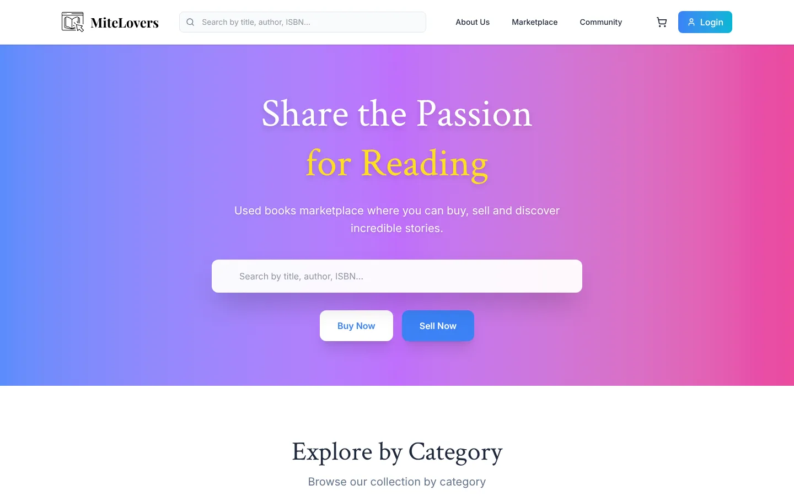

Fui treinador e gestor desportivo durante nove anos. Hoje construo software, do primeiro requisito ao deploy. For nine years I was a coach and sports manager. Today I build software, from the first requirement to deployment.
01TrabalhoWork
-
01
Matriz
2026
Gestão de projetos e tarefas para equipas, feita de raiz até ao deploy, com IA como copiloto e revisão humana em cada passo.
Project and task management for teams, built from scratch through to deployment, with AI as a copilot and human review at every step.
Java · Spring Boot · PostgreSQL · React · TypeScript · Docker
-
02
RegiVolleyEM CURSOIN PROGRESS
2026
Reservas de treinos para associações amadoras de voleibol: turmas por nível, lista de espera, planos e pagamentos. Uma PWA pensada para o telemóvel.
Training bookings for amateur volleyball associations: level-based groups, waitlist, plans and payments. A PWA designed for the phone.
Java · Spring Boot · PostgreSQL · React · TypeScript · Tailwind -
03
MiteLovers
2025–26
Marketplace de livros e revistas usados, com venda direta e leilões. Projeto de equipa do SWitCH Dev, com 85% de cobertura de testes e 95% de mutation score.
Marketplace for used books and magazines, with direct sales and auctions. SWitCH Dev team project, with 85% test coverage and a 95% mutation score.
Java · Spring Boot · React · Docker · GitHub Actions · PITest
02PercursoPath
DesportoNove anos como gestor desportivo e treinador: equipas, planeamento e pessoas.
SportNine years as a sports manager and coach: teams, planning and people.
SWitCH Dev · ISEPA reconversão de carreira. Projeto de equipa MiteLovers, com Scrum e DevSecOps.
SWitCH Dev · ISEPThe career change. MiteLovers team project, with Scrum and DevSecOps.
CódigoA Matriz, feita de raiz até ao deploy, e a RegiVolley, onde o código encontra o voleibol.
CodeMatriz, built from scratch through to deployment, and RegiVolley, where code meets volleyball.
03SobreAbout
Do desporto ao desenvolvimento de software.
From sport to software development.
A minha carreira profissional começou no desporto, onde trabalhei durante 9 anos como gestor desportivo e treinador. Fiz depois uma reconversão de carreira através do programa SWitCH Dev (ISEP) para me tornar Software Developer.
My professional career began in sport, where I worked for 9 years as a sports manager and coach. I then changed careers through the SWitCH Dev programme (ISEP) to become a Software Developer.
Estou a apaixonar-me por todo o processo necessário para levar um serviço até um deploy bem-sucedido!
I'm falling in love with the whole process it takes to get a service successfully deployed!
Fora do código, pratico CrossFit e HYROX e adoro voleibol.
Away from the code, I do CrossFit and HYROX, and I love volleyball.
04FerramentasTools
Java, Spring Boot, Spring Security, JWT, JPA, Flyway, REST, OpenAPI, HATEOAS, clean architecture
React, TypeScript, Vite, React Router, Tailwind
PostgreSQL, SQL, H2
JUnit, Testcontainers, ArchUnit, PITest, Vitest, Testing Library, Playwright, SonarQube
Docker, GitHub Actions, Jenkins, Vagrant, Ansible, Trivy, Render
Scrum, Agile, IA como copiloto com revisão humanaAI as a copilot with human review
05ContactoContact
Escreve-me paraWrite to me at
pinmariohenrique@gmail.com